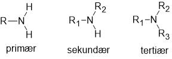
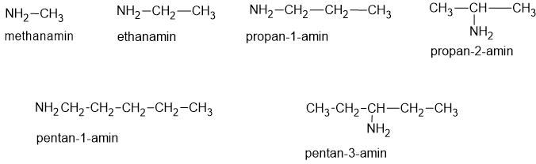
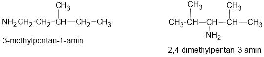
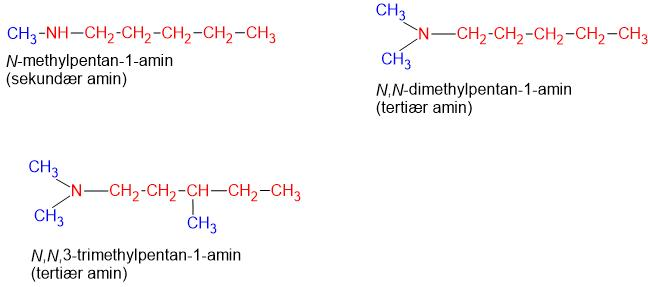
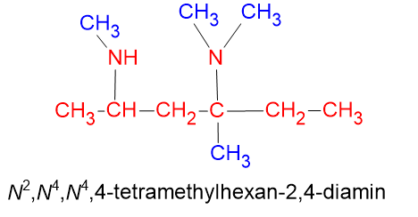
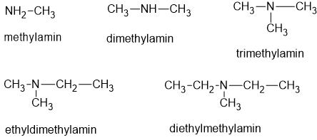
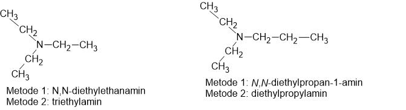

Strukturen af aminer
Man kan opfatte aminer som afledt fra ammoniak (NH3). Hvert af H'erne kan erstattes af en alkylgruppe (methyl, ethyl ...).Vi kan dele aminerne op i primære, sekundære og tertiære, som det fremgår af figuren nedenunder. R repræsenterer en alkylgruppe.

Navngivning af aminer
Vi kan navngive aminerne efter to metoder. De vil her blive kaldt metode 1 og metode 2. Efter den første metode tager man udgangspunkt i den længste kæde og betragter de andre alkylgrupper som substituenter der navngives efter sædvanlige regler. Efter den anden metoder betragter man alle alkylgrupper som substituenter. Metoder 2 giver i nogle tilfælde simplere navne, det vil fremgå længere nede.
Metode 1, primære aminer
Hvis vi udskifer ét H i ammoniak med en alkylgruppe, får vi en primær amin. Hvis alkylgruppen er methyl, hedder aminen methanamin. Tilsvarende hvis alkylgruppe er ethyl, får vi ethanamin. Hvis alkylgruppen er propyl, får vi to muligheder, hvilket giver propan-1-amin og propan2-amin, se figuren.

Hvis der er sidekæder, navngives der på sædvanlig vis.

Metode 1, sekundære og tertiære aminer
Hvis der er to eller tre substituenter på N'et, regnes de to korte kæder for sidekæder der er bundet til N. For at angive at de er bundet til N, bruges netop et N(!) til at angive substituentens placering.

Hvis der er flere N-atomer i aminet og der sidder sidekæder på en eller flere af dem, må man nummerere N-atomerne. Eksemplet herunder viser hvordan. Bemærk at N-atomerne nummereres efter det C-atom de er bundet til.

Metode 2
I metode 2 tager man udgangspunkt i N'et og nævner de op til tre substituenter i alfabetisk rækkefølge (man bruger naturligvis også de sædvanlige præfikser di og tri).

Sammenligning
Som tidligere nævnt, så giver metode 2 i nogle tilfælde lidt simplere navne. Et par eksempler illustrerer det.
